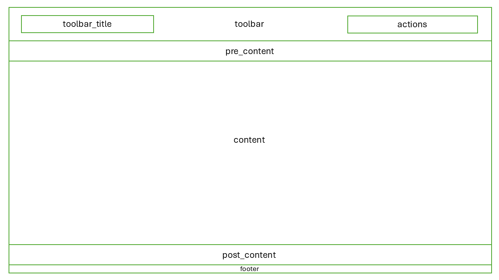

Web-based User Interface Development
Last updated on 2025-10-10 | Edit this page
Overview
Questions
- What is Trame, and why should I use it for building UIs in NOVA?
- How does
nova-tramemake Trame development easier? - What are the key advantages of using a declarative UI approach with Trame?
- How can I create a basic UI layout using
nova-tramecomponents? - How can I add common Vuetify components (e.g.,
VTextField,VCheckbox,VSlider) to my Trame application? - How can I customize the appearance of Vuetify components?
- Where can I find more information about available Vuetify components?
Objectives
- Explain the purpose of Trame as a UI framework.
- Describe how
nova-tramesimplifies Trame development in NOVA applications. - Identify key features and benefits of using Trame.
- Use
nova-tramecomponents to build a basic user interface. - Incorporate common Vuetify components into a Trame application.
- Explore the Vuetify component library and identify components suitable for scientific applications.
- Add custom UI components, and tailor their appearance with attributes.
Web-based User Interface Development
In this section, we will dive into Trame and the
nova-trame library to build interactive web-based user
interfaces for our NOVA applications. We'll explore how
nova-trame simplifies UI development within the NOVA
ecosystem and how to use common layout components.
Introduction to Trame
Trame is a powerful Python framework for building interactive web applications and visualizations. It lets you create UIs declaratively using Python, eliminating the need for complex JavaScript and front-end web development. Trame handles the complexities of creating a dynamic web application, allowing you to focus on your application's logic.
Key Features and Benefits of Trame:
- Declarative UI: Define your user interfaces using Python code. You describe what the UI should be, not how to implement it using web technologies. This significantly simplifies UI development.
- Interactive Applications: Create dynamic UIs with real-time updates using Trame's data binding capabilities. Changes in your ViewModel automatically reflect in the UI, and user interactions in the UI can update the ViewModel.
- Web-Based and Accessible: Trame applications are standard web applications, accessible from any modern web browser. This makes them easy to deploy and share with colleagues and users.
- Extensible and Rich UI Components: Trame leverages libraries like Vuetify, providing a wide range of pre-built, visually appealing, and interactive UI components. Vuetify follows the Material Design specification, ensuring a modern and consistent look and feel.
- Python-Centric Development: Build complex web applications and perform computations using Python, without needing extensive front-end web development knowledge. This allows you to leverage your existing Python skills.
Introducing nova-trame
nova-trame simplifies the process of creating consistent
and easy-to-use Trame applications within the NOVA framework. It builds
upon the core Trame framework by providing pre-built components,
layouts, themes, and utilities tailored for the NOVA ecosystem.
Benefits of using nova-trame:
-
Simplified UI Development: Reduces the boilerplate
code required to create a Trame application.
nova-trameprovides abstractions and helpers that streamline common UI tasks. - Consistent Look and Feel: Ensures all NOVA applications have a consistent look and feel by applying a common theme and style based on the NOVA design guidelines. This helps users easily recognize and use NOVA applications.
- Reusable UI Components: Makes it easy to use reusable UI components within your application. You can create custom components and share them across multiple NOVA applications.
-
Integration with MVVM:
nova-trameworks seamlessly with thenova-mvvmlibrary to implement the MVVM architecture. This simplifies the process of connecting your UI to your application logic.
Key nova-trame Components
nova-trame provides several key components that simplify
UI development. Here are some of the most important:
-
Layout & Theme Management
(
ThemedApp):nova-trameprovides a default layout and theme that will give your application a consistent look and feel to other NOVA applications. If needed, you can still customize or override the defaults. -
InputField: This component simplifies the creation of various input fields (text fields, dropdowns, checkboxes, etc.). It automatically integrates with Pydantic models to load labels, hints, and validation rules, reducing the amount of code you need to write. It also supports debouncing and throttling for improved performance. -
RemoteFileInput: This component allows you to browse the filesystem that the application is running on and select a file from it. This must be used carefully but can provide you with a simple way to connect to remote filesystems (e.g. the analysis cluster filesystem for HFIR and SNS). -
Layout Components:
nova-trameprovides layout components that help you structure your UI. These components are based on CSS Flexbox and Grid layouts, making it easy to create responsive and visually appealing UIs. The main layout components include:-
GridLayout: Creates a grid with a specified number of columns. You can useGridLayoutto arrange your UI elements in a structured grid layout. -
VBoxLayout: Creates an element that vertically stacks its children. UseVBoxLayoutto arrange UI elements in a vertical column. -
HBoxLayout: Creates an element that horizontally stacks its children. UseHBoxLayoutto arrange UI elements in a horizontal row.
-
Let's explore these components in more detail:
Layout & Theme Management (ThemedApp)
Layouts are responsible for arraging your content in a consistent manner. In Trame, a layout consists of multiple “slots”. A slot is a section of the page to which you can add content.
nova-trame provides a basic layout and theme that you
can access via the ThemedApp class. The template app will
setup your main view class to inherit from ThemedApp
already, but to see how it works let's try moving the button to run the
fractal tool from the fractal tab into post_content slot in
the layout.
1. src/nova_tutorial/app/views/main.py
(Modify):
PYTHON
import logging
from nova.mvvm.trame_binding import TrameBinding
from nova.trame import ThemedApp
from nova.trame.view import layouts
from trame.app import get_server
from trame.widgets import vuetify3 as vuetify
from ..mvvm_factory import create_viewmodels
from ..view_models.main import MainViewModel
from .tab_content_panel import TabContentPanel
from .tabs_panel import TabsPanel
logger = logging.getLogger(__name__)
logger.setLevel(logging.INFO)
class MainApp(ThemedApp):
"""Main application view class. Calls rendering of nested UI elements."""
def __init__(self) -> None:
super().__init__()
self.server = get_server(None, client_type="vue3")
binding = TrameBinding(self.server.state)
self.view_models = create_viewmodels(binding)
self.view_model: MainViewModel = self.view_models["main"]
self.create_ui()
def create_ui(self) -> None:
self.state.trame__title = "Fractal Tool GUI"
with super().create_ui() as layout:
layout.toolbar_title.set_text("Fractal Tool GUI")
with layout.pre_content:
TabsPanel(self.view_models["main"])
with layout.content:
TabContentPanel(
self.server,
self.view_models["main"],
)
with layout.post_content:
vuetify.VBtn(
"Run Fractal",
click=self.view_model.run_fractal # calls the run_fractal_tool method
)
return layout2. src/nova_tutorial/app/views/fractal_tab.py
(Modify):
PYTHON
def create_ui(self) -> None:
InputField(v_model="config.fractal.fractal_type")
vuetify.VImg(src=("config.fractal.image_data",), height="400", width="400")ThemedApp.create_ui will return the layout object, so be
careful not to modify the super().create_ui() call.
The with syntax is used by Trame to add content to a
slot. This allows your view to be defined in a hierarchical way similar
to writing HTML.
Here is a layout diagram showing all of the available slots in
ThemedApp:

nova-trame slot diagram for its
default layoutFor a detailed discussion of how to work with these slots, please
review the nova-trame
documentation. This documentation also shows you how to customize
the theme provided by nova-trame and how to perform common
UI tasks such as managing the spacing between elements.
InputField
The InputField component simplifies creating different
types of input fields in your UI. It can create text fields, dropdowns
(select), checkboxes, and more, all with a consistent look and feel. A
key advantage of InputField is its automatic integration
with Pydantic models. If the v_model references a Pydantic
model field, InputField can automatically:
-
Load the label: Use the
titleattribute from the Pydantic field as the input field's label. -
Display a hint: Use the
descriptionattribute from the Pydantic field as a help text or hint for the input field. - Apply validation rules: Automatically generate validation rules based on the Pydantic field's type and constraints.
This integration significantly reduces the amount of boilerplate code you need to write for input fields.
The InputField also provides debouncing and throttling
features that can improve application performance. These features are
useful when dealing with user input that triggers frequent updates to
the Trame state.
Let's change the fractal type field to a dropdown and add a label to it.
3. src/nova_tutorial/app/models/fractal.py
(Modify):
PYTHON
from enum import Enum
class FractalTypeOptions(str, Enum):
mandelbrot = "mandelbrot"
julia = "julia"
random = "random"
markus = "markus"
class Fractal(BaseModel):
fractal_type: FractalTypeOptions = Field(default=FractalTypeOptions.mandelbrot)4. src/nova_tutorial/app/views/fractal_tab.py
(Modify):
RemoteFileInput
The RemoteFileInput component allows you to quickly
create a widget for the user to find and select files from the computer
running your application. This can be powerful if you want to connect
your application to the SNS analysis cluster filesystem, for example, as
you could use RemoteFileInput(base_paths=["/HFIR", "/SNS"])
to expose relevant experiment data to users.
5. src/nova_tutorial/app/views/sample_tab_1.py
(Modify):
PYTHON
from nova.trame.view.components import InputField, RemoteFileInput
class SampleTab1:
"""Sample tab 1 view class. Renders text input for username."""
def __init__(self) -> None:
self.create_ui()
def create_ui(self) -> None:
RemoteFileInput(v_model="config.file", base_paths=["/HFIR", "/SNS"])
InputField(v_model="config.username")6. src/nova_tutorial/app/models/main_model.py
(Modify):
Add a file field to the MainModel to store
the selected file path. We use Optional[str] because
initially, no file will be selected.
PYTHON
from pydantic import BaseModel, Field
from .fractal import Fractal
class MainModel(BaseModel):
username: str = Field(
default="test_name",
min_length=1,
title="User Name",
description="Please provide the name of the user",
examples=["user"],
)
password: str = Field(default="test_password", title="User Password")
file: str = Field(default="", title="Select a File")
fractal: Fractal = Field(default_factory=Fractal)If you want to connect your application to the analysis cluster, then it will need to be run on a computer where the filesystem is mounted. If your application is deployed through our platform, then we can ensure that your application runs in the correct environment to support your needs.
When using RemoteFileInput, please ensure that the
base_paths parameter only contains paths that you are ok
with the user seeing.
After the user selects a file, the v_model will store a
path to the file.
Layout Components: GridLayout, VBoxLayout,
and HBoxLayout
nova-trame provides several layout components that make
it easy to structure your UI:
-
GridLayout: Creates a grid layout with a specified number of columns. This is useful for arranging UI elements in a structured grid. You can use therow_spanandcolumn_spanattributes to control how many rows and columns each element spans.
PYTHON
from nova.trame.view import layouts
from trame.widgets import vuetify3 as vuetify
with layouts.GridLayout(columns=2):
vuetify.VTextField(label="First Name")
vuetify.VTextField(label="Last Name")
vuetify.VTextField(label="Email")
vuetify.VTextField(label="Phone Number")This code creates a grid with two columns and arranges the text fields in the grid.
-
VBoxLayout: Creates a vertical box layout, stacking its children vertically. This is useful for creating simple vertical layouts.
PYTHON
from nova.trame.view import layouts
from trame.widgets import vuetify3 as vuetify
with layouts.VBoxLayout():
vuetify.VTextField(label="Address Line 1")
vuetify.VTextField(label="Address Line 2")
vuetify.VTextField(label="City")This code creates a vertical layout and stacks the text fields vertically.
-
HBoxLayout: Creates a horizontal box layout, stacking its children horizontally. This is useful for creating simple horizontal layouts.
PYTHON
from nova.trame.view import layouts
from trame.widgets import vuetify3 as vuetify
with layouts.HBoxLayout():
vuetify.VTextField(label="First Name")
vuetify.VTextField(label="Last Name")This code creates a horizontal layout and stacks the text fields horizontally.
By combining these layout components, you can create complex and responsive UI layouts.
As an example, we can use the layout classes to center the “Run Fractal” button.
7. src/nova_tutorial/app/views/main.py
(Modify):
PYTHON
from nova.trame.view import layouts
...
with layout.post_content:
with layouts.HBoxLayout(classes="my-2", halign="center"):
vuetify.VBtn(
"Run Fractal",
click=self.view_model.run_fractal # calls the run_fractal_tool method
)In the above example, we use the classes parameter to
HBoxLayout to add the my-2 CSS class to the
element. This parameter can be used on any Trame component to customize
your interface’s appearance without having to write CSS.
The my-2 class is provided by Vuetify and gives the element vertical
margin (space above and below the element). https://vuetifyjs.com/en/styles/spacing documents this
class and other classes related to spacing. There are also many other
pages on the Vuetify docs describing classes that together give you a
wide range of options for customizing your interface.
For a more detailed explanation of how to work with our layout and
theme, please refer to the nova-trame documentation.
Running the application
To run the code, use the following command in the top level of your
nova_tutorial project:
You should now see the simple UI. When you click the “Sample Tab 1” and “Sample Tab 2” tabs, you should now see the updated content with the new UI components.
Advanced Topics (Asynchronicity & Conditional Rendering)
Now that we understand the basics of working with Trame, let's make the view for the fractal tab a bit more intuitive for the user by giving them a visual indicator that the job is running.
7. src/nova_tutorial/app/views/fractal_tab.py
(Modify):
PYTHON
def __init__(self, view_model: MainViewModel) -> None:
self.view_model = view_model
self.view_model.running_bind.connect("running")
self.create_ui()
def create_ui(self) -> None:
InputField(v_model="config.fractal.fractal_type", classes="mb-2", type="select")
vuetify.VProgressCircular(v_if="running", indeterminate=True)
vuetify.VImg(v_else=True, src=("config.fractal.image_data",), height="400", width="400")We will need to add a data binding for running, as well.
We choose to place this directly in the view model as this is not
relevant to running the fractal tool on NDIP.
8. src/nova_tutorial/app/view_models/main.py
(Modify):
PYTHON
from asyncio import create_task, sleep
from threading import Thread
# ... (rest of the file) ...
def __init__(self, model: MainModel, binding: BindingInterface):
self.model = model
self.running = False
# here we create a bind that connects ViewModel with View. It returns a communicator object,
# that allows to update View from ViewModel (by calling update_view).
# self.model will be updated automatically on changes of connected fields in View,
# but one also can provide a callback function if they want to react to those events
# and/or process errors.
self.config_bind = binding.new_bind(self.model, callback_after_update=self.change_callback)
self.running_bind = binding.new_bind()
def update_view(self) -> None:
self.config_bind.update_in_view(self.model)
self.running_bind.update_in_view(self.running)Finally, we manipulate our new view state based on the current status of the tool. Because the fractal tool takes a long time to complete, we offload it to a background thread. If we do not do this, then Trame will not update the view until the tool has finished running, which defeats the purpose of this change.
PYTHON
def run_fractal(self) -> None:
self.running = True
self.update_view()
# update_view won't take effect until this method returns a value, so we must offload this long-running task to
# a background thread for our conditional rendering to work.
fractal_tool_thread = Thread(target=self.run_fractal_in_background, daemon=True)
fractal_tool_thread.start()
# We also need to know when the tool is done running so that we can
create_task(self.monitor_fractal())
def run_fractal_in_background(self) -> None:
self.model.fractal.run_fractal_tool()
self.running = False
async def monitor_fractal(self) -> None:
while self.running:
await sleep(0.1)
self.update_view()With any Trame or nova-trame component, you can use the
v_if, v_else_if, and v_else
arguments to only show the component in the interface when a condition
is true. The condition can be a reference to your model, similar to the
v_model argument, or it can be a full JavaScript expression
for complex use cases.
One major caveat when working with Trame is that Trame itself runs in the main thread of your application. Since Trame is responsible for syncing state between the server and the user interface, if you run a long, CPU-bound task in the main thread then Trame will freeze and your user interface will likely crash. If you need to run a long job (for example, a Mantid command that takes several minutes), then it is your responsibility to ensure that the task is run in a separate thread.
Challenge
Explore the InputField Component Modify
the InputField component in SampleTab1 to
automatically retrieve the label, hint, and validation rules from a
Pydantic model field. Create a simple Pydantic model with a
username field with a title,
description, and min_length constraint.
Challenge
Create a Complex Layout Combine
GridLayout, VBoxLayout, and
HBoxLayout components to create a more complex UI layout in
SampleTab2. Try creating a layout with a header, a sidebar,
and a main content area.
Challenge
Customize Component Appearance Experiment with customizing the appearance of the Vuetify components using the various props and styles available. Try changing the color, size, font, and other visual attributes of the components. Refer to Vuetify's component documentation for details.
References
- Nova Documentation: https://nova-application-development.readthedocs.io/en/latest/
- nova-galaxy documentation: https://nova-application-development.readthedocs.io/projects/nova-galaxy/en/latest/
- nova-trame documentation: https://nova-application-development.readthedocs.io/projects/nova-trame/en/stable/
- nova-mvvm documentation: https://nova-application-development.readthedocs.io/projects/mvvm-lib/en/latest/
- Vuetify Documentation: https://vuetifyjs.com/en/
- Calvera documentation: https://calvera-test.ornl.gov/docs/
```
- Trame is a powerful python UI framework which lets users create a UI declaratively.
- Nova-Trame is a library which eases the development of UI applications for NOVA.
- Nova-Trame provides key components, such as, InputField and GridLayout to greatly simplify the creation of a functional UI.